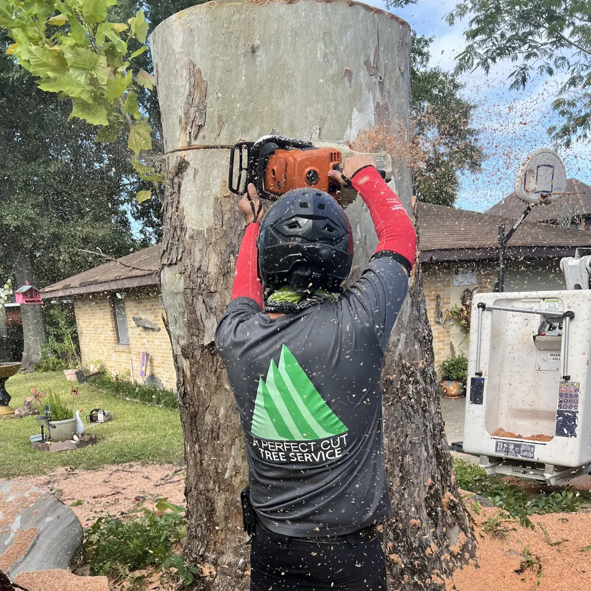
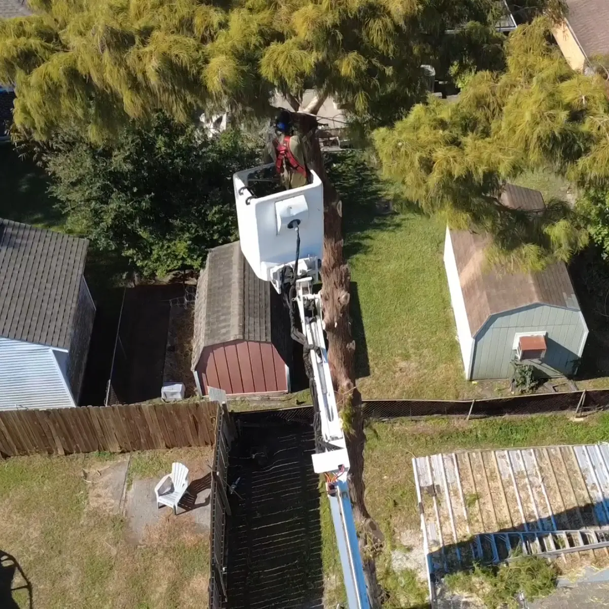

Tree Preservation Laws and Regulations: A Complete Guide
Contact us today for a consultation on our Tree Preservation Services in NOLA!
Urgent or unsafe? Call (504) 732-0779


Trees are essential components of our environment, providing numerous benefits to both humans and wildlife. Trees help to clean the air, reduce pollution, provide shade, and contribute to the natural beauty of our surroundings.
As such, it is important to have regulations in place to protect trees and ensure their preservation for generations to come. Tree preservation laws and regulations are put in place at various levels of government to help protect trees from damage, destruction, or removal.
Tree preservation laws and regulations typically require individuals, companies, and organizations to obtain permits before conducting any activities that could potentially harm or remove trees. These permits are issued by local, state, or federal authorities, and often require individuals to provide detailed plans outlining how they will protect trees during construction or development projects.

The Process of Obtaining Permits for Removing or Pruning Trees
Tree preservation laws and regulations often require property owners to obtain permits before removing or pruning trees. Here is a general overview of the process for obtaining these permits:
- Determine if a Permit Is Required: Check with your local government or tree commission to determine if a permit is required for the tree removal or pruning you are planning. Permit requirements vary depending on the jurisdiction and the size and type of tree.
- Gather Required Information: If a permit is required, you may need to provide information about the tree(s) in question, such as their size, species, and health status. You may also need to provide documentation of the need for removal or pruning, such as a tree assessment report or an arborist’s recommendation.
- Submit an Application: Once you have gathered the necessary information, you will need to submit a permit application to the appropriate government agency or tree commission. The application may require payment of a fee.
- Wait for Approval: After submitting your application, you will need to wait for approval before proceeding with the removal or pruning. Approval timelines vary depending on the jurisdiction and the complexity of the permit request.
- Comply With Permit Requirements: If your permit is approved, you will need to comply with any requirements specified in the permit, such as a specific timeline for completing the work, requirements for replanting, or requirements for protecting other trees on the property.
- Work With a Qualified Tree Care Professional: It is important to work with a qualified tree care professional who understands the permit requirements and can ensure compliance. This may include providing documentation of the work performed and obtaining a certificate of completion once the work is done.

Understanding the Different Types of Tree Preservation Laws
Tree preservation laws and regulations can take various forms, depending on the level of government and the specific circumstances of the tree in question.
Here are some of the different types of tree preservation laws:
Municipal Ordinances
Municipalities, cities, and towns often have ordinances that govern the protection of trees on public and private property within their jurisdiction. These ordinances can cover a range of issues, such as tree removal permits, pruning guidelines, and penalties for violating the law.
State Laws
Many states have laws that regulate the removal of trees on public and private property. These laws can vary widely from state to state and can include requirements for permits, assessments of tree health, and penalties for illegal tree removal.
Federal Laws
Federal laws such as the Endangered Species Act and the National Environmental Policy Act provide protections for trees in specific circumstances, such as those that are rare or threatened. Additionally, federal agencies may have regulations that govern the protection of trees on federal lands.
Zoning and Land Use Regulations
Zoning and land use regulations often include provisions for the protection of trees on public and private property. These regulations can include requirements for the preservation of existing trees, the planting of new trees, and the maintenance of tree cover on a property.
Tree Trusts
Some communities establish tree trusts to oversee the preservation and maintenance of trees in public areas. Tree trusts are often funded through public and private sources and can provide ongoing support for the preservation of trees.

Key Components of Tree Preservation Regulations
Tree preservation regulations aim to protect trees from damage, destruction, or removal due to human activities. The specific components of these regulations can vary depending on the jurisdiction, but here are some of the key components of tree preservation regulations:
Tree Identification
Tree preservation regulations may identify specific species or types of trees that are protected. These may include trees that are rare, endangered or have particular cultural or historical significance.
Tree Protection Measures
Regulations may require that trees be protected during construction or development activities. This may include measures such as fencing, mulching, and limiting access to the root zone of the tree.
Tree Removal Permits
Regulations may require permits for the removal of trees on public or private property. These permits may include criteria for tree removal, such as the size, health, and location of the tree.
Tree Replacement
Regulations may require that trees be replaced if they are removed from a property. This can help to ensure that the overall tree cover is maintained and that the benefits of the removed tree are replaced.
Enforcement and Penalties
Regulations may specify penalties for violating the regulations, such as fines, penalties, or other legal actions. Enforcement of the regulations may be carried out by a government agency, such as a tree commission or conservation department.
Tree Maintenance Requirements
Regulations may require that trees on public or private property be maintained and kept in good health. This may include guidelines for pruning, fertilization, watering, and other maintenance activities.

The Importance of Tree Preservation Laws and Regulations
If you own property with trees or are planning construction or development activities, it is important to understand the applicable tree preservation regulations in New Orleans and comply with them. By doing so, you can help to protect trees and their benefits, such as clean air, wildlife habitat, and shade, for future generations.
At A Perfect Cut Tree, we understand the importance of tree preservation laws and regulations. Our team of qualified tree care professionals can help you comply with these regulations while ensuring that your trees are healthy and well-maintained. From tree removal permits to tree care and maintenance, we can help you navigate the regulations and protect your trees.
Tree preservation laws and regulations are essential for protecting trees and their benefits. By working with a qualified tree care professional, you can ensure that your trees are properly maintained while complying with these important regulations. Contact us today to learn more about our tree care services and how we can help you protect your trees for generations to come.
What to Photograph From a Safe Distance
Photos and video show us the tree, the property around it, how we would reach it, and any visible hazards.



Tree down or a limb on a line?
Skip the photos and call. Calls are answered 24/7.
(504) 732-0779Office hours: Monday to Friday 7 AM to 5 PM, Saturday 7 AM to 3 PM, closed Sunday.


Ready to Show Us Your Tree?
Show us the tree. An arborist reviews what you send. Photos give us a first look. Some trees need an in-person visit before we can make a final recommendation.